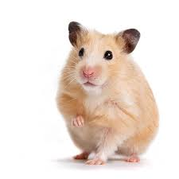

"Совесть - как толстый хомяк: или спит, или грызет."
Хомяки́ (лат. Cricetinae) — подсемейство грызунов семейства хомяковых. Включает 19 видов, относящихся к семи родам. Стали популярными домашними питомцами. Самым известным видом хомяка является золотой или сирийский хомячок (Mesocricetus auratus), который чаще всего используется в качестве домашних животных. Другими видами хомяков, которых обычно держат в качестве домашних животных, являются три вида хомячков, хомячок Кэмпбелла (Phodopus campbelli), джунгарский хомячок (Phodopus sungorus) и хомячок Роборовского (Phodopus roborovskii). Хомяки являются более сумеречными, чем ночными животными и, в дикой природе, остаются под землёй в течение дня, чтобы не быть пойманными хищниками. Они питаются, главным образом, семенами, фруктами, овощами и растительностью, иногда роющими насекомыми.
К семейству хомяков относятся небольшие, плотно сложенные грызуны с короткими конечностями, маленькими
ушами и
короткими хвостами. Длина тела варьируется от 5 до 34 см, хвоста от 0,7 до 10 см. Самки у некоторых
видов
крупнее самцов. Окраска густого меха на спине от пепельно- или буровато-серой до тёмной
коричнево-охристой; на
животе — чёрная, белая или серая. Иногда вдоль спины проходит чёрная полоса. Имеются очень развитые
защёчные мешки. Хомяки имеют плохое зрение; они близоруки и дальтоники.
Обитатели Палеарктики; водятся в Центральной и Восточной Европе, Малой Азии, Сирии, Иране, Сибири, Монголии, северном Китае и Корее. Хомяки обитают преимущественно в открытых засушливых ландшафтах — лесостепях, степях, полупустынях и пустынях; в горах встречаются на высоте до 3600 метров. Населяют и антропогенные ландшафты — поля, сады.
Норные животные; некоторые виды неплохо плавают, набирая в защёчные мешки воздух. Живут одиночно, роют сложные норы. В настоящую зимнюю спячку не впадают, но могут впадать в продолжительное оцепенение. Питаются растительной и животной пищей, преимущественно семенами. Многие виды делают запасы корма, иногда до 90 кг (например, обыкновенный хомяк). Кузнечиковые хомячки - активные ночные хищники, в их рационе до 90% составляет животная пища. Помимо насекомых и паукообразных (тарантулов, скорпионов) могут нападать на мышевидных грызунов, мелких змей (в том числе и ядовитых) и ящериц.